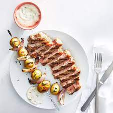

Grill-Baked Potatoes and Ham Kabobs

From kitchen to table in Ready for your table in 1 to 1 1/2 hours depending on type of grill.
Ingredients
- 1 pound & 8 ounces potato
- 1/2 cup pineapple juice
- 2 tablespoons & 2 teaspoons mustard
- 1 tablespoon & 1 teaspoon soy sauce
- 1 tablespoon & 1 teaspoon cornstarch
- 1 dash pepper
- 1 dash ginger
- 1 dash allspice
- 8 ounces ham
- 4 ounces onion
- 4 ounces green pepper
- 2 ounces pineapple
- 2 ounces mango
- skewers
Steps
- Prepare BBQ grill.
- Scrub potatoes and wrap in foil.
- Place potatoes on grill and cover.
- After cooking for about 30 minutes turn potatoes
- Turn again in another 20 minutes.
- When potatoes allow a fork to enter easily, prepare kabobs.
- Mix together pineapple juice, mustard and soy sauce. Stir in cornstarch. Add pepper, ginger and allspice. Mix well.
- Heat in a saucepan until slightly thickened. Set aside.
- Cut ham, vegetables and fruit into chunks and place on skewer.
- Move potatoes to the edges of the grill and lay kabobs onto grill and brush with sauce.
- When brown on one side, turn and brush again with sauce.
- Serve kabobs with remaining sauce for dipping alongside baked potatoes.